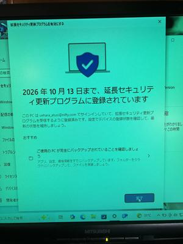

うるがいの話 ある日
最新: フィッシング詐欺【うるがいの話 ある日】とは 一日だけのプログです
『うるがいの話』の最新一日だけのプログで、通信料が少なく経済的だ。カニの画像をクリックすると全ての日付が載る『うるがいの話』サイトを表示します
|
|
【うるがいの話】 うるがい(ｳﾙｶﾞｲ urugai)とは、『もずくがに』の名前でとても大きくなります。 |
|---|---|
|
|
【カミマヤーの話】 猫のことを方言でマヤーといいます。カミマヤー（kamimayaa）とは、神の猫のことです。 |
|
【たながぁの音楽】 たながぁ（ﾀﾅｶﾞｰ tanagaa）とは手長えびのことで、何種類かあり大きいのは車 エビぐらいになります。 |

|
【ぶながぁの話】 ぶながぁ(ﾌﾞﾅｶﾞｰ bunagaa)とは、赤い髪の毛、赤い身体、そして身長は１ｍ２０ｃｍ ぐらい、川の蟹を食べているの目撃された。場所は沖縄県国頭郡大宜味村のと ある村僕の隣近所に住んでいる爺さんから、聞いた話です。 |
|
|
【ギーマの話】 ギーマ(giima)とは、山原の里山に咲くスズランに似た、 花を付けます。実は食べられます、 気が付くと口の周りが紫になっています。 |
2025年10月15日 (水）フィッシング詐欺
16:39

フィッシング詐欺のメールが二つも、届いた。まずは、マネック
ス証券。因みにリンク先をクリニックしたらダメですよ。
お問い合わせのご回答－マネックス証券
このたびは、お問い合わせいただき誠にありがとうございます。
お問い合わせに対する回答を更新しました。当社からの回答はお
客様サイト、日本株アプリ等からご確認ください。
・当社からの回答の確認方法
https://moonex.wqggvb.top/zawdoqyu
マネックス証券
http://www.monex.co.jp/
これは、悩むこともない。ネットでも、フィッシング詐欺とある
次なんですよ、『Apple IDの再アクティベーションが必要です』
お客様のApple IDは長期間ご利用が確認されなかったため、セキ
ュリティ保護の観点から一時的に凍結されています。
Apple IDの再アクティベーションが必要です
引き続きご利用いただくためには、以下の公式サイトにアクセス
し、再度ログインを行ってアカウントを再有効化してください。
Apple IDにサインインする
※24時間以内に再アクティベーションを完了されない場合、アカ
ウントが自動的に削除される可能性があります。
※このメールは自動送信されています。返信の必要はありません。
Appleサポートチーム
リンクされた公式サイトにアクセス（https://sxxytj.com/）する
と、電話番号やパスワードの入力画面がるのです。でも、なぜこ
のメールアドレスに来るのだろう？、アップルへの登録メールア
ドレスは、別のアドレスなのです。ネットで検索した、フィッシ
ング詐欺でっせ。やばかったね、メールアドレスは漏れているの
は、仕方ないので注意するしかないですね。
下の写真は、なぜか外付けモニタが青くなってしまったけど。

最後に、夜中お腹の調子がおかしくなったケド、朝には治ってい
ました。三日前のモリンガのおひたしが、原因だと思う。